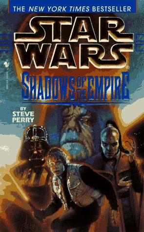

#13778 1 2007-01-30T03:38:23Z Topolord This is something my friend realized. I think it's pretty accurate.
Eragon is a rip-off of star-wars. (with some lord of the rings in there too.) essentially, they're both stories about boys from back-country farms in a part of a great empire ruled by a cruel magic (force) wielding elite. The boy then finds a dragon (light saber) and master. (obi-wan and that other dude from eragon.) while they're out training, his adopted families house is attacked, and his adopted family dies. (okay, his brother doesn't die in eragon, but it's a small difference.) He then goes with his master on to join with the rebels. On the way, they encounter Durza (one of the facets of Darth Vador, the other is the dead one who is his father.) and he kills his master, but the boy rescues the elf-lady. (the princess) They then continue to the rebel base, and then assist the rebels, and during the climactic battle, the boy is instrumental in the destruction of the enemy forces, (deathstar) in part becuase of his natural underdstanding of magic. (the force) I don't know as much about the second book, but I know that at the end, the boy finds out that the evil right-hand man to the emperor is his father.
I found that all rather striking and funny. what do you think? creditable?
#291643 2 2007-01-30T03:41:44Z Viridovix I wonder if I should get my picket sign ready for Christopher Paolini...
#291646 3 2007-01-30T03:49:13Z Baraba You act like Star Wars had an original plot to begin with.
Although, yes, yes it does sound similar.
#291649 4 2007-01-30T03:51:31Z Trogdor007 Baraba's right. Star Wars was created to epitomize the Epic serial.
It's been a formula for films for ages, though this sounds like it cuts too close for comfort.
#291650 5 2007-01-30T03:52:31Z DemonzLunchBreak Of course. This is something I've thought for a while.
#291652 6 2007-01-30T03:53:32Z Viridovix Why can't stories ever start with a person who is "reverse-dynamic"?
#291653 7 2007-01-30T03:53:34Z McP3000 You act like Star Wars had an original plot to begin with.
Although, yes, yes it does sound similar.
YOU'RE LYING! STAR WARS IS HOLY! HEATHENS, ALL OF YOU!!!
*goes to read another lame star wars book spin-off*
anyway, this gives me ANOTHER reason to NOT see Eragon. Thanks topolord

#291656 8 2007-01-30T03:54:59Z Trogdor007 MCP, I'm with you. I am an insane star wars freak, having read all the novels with the exception of the "New Jedi Order."
#291658 9 2007-01-30T03:57:57Z McP3000 Trogdor, my favorite...FTW:

#291659 10 2007-01-30T03:58:13Z Viridovix this gives me ANOTHER reason to NOT see Eragon
The movie is horrible anyways. They left way to much out, and added some things that ruined the whole theme. I would go into detail but I only have a few hours before I go to sleep...
#291670 11 2007-01-30T05:06:37Z Luminaflare The book was brilliant, yes i can see similaritys in the first book to the first star wars now but you got some of the plot slightly wrong. Also this tale is quite a big spoiler to people who are reading the book i mean its like saying to an avid harry potter fan who kills who in the last harry potter
On the way, they encounter Durza (one of the facets of Darth Vador, the other is the dead one who is his father.) and he kills his master
neither durza nor galbatorax kills brom it is the razen who are these weird bird like things.
also i think the second book (eldest) is different than the second film (star wars) and that the similarity's in the first book are unintentional
#291769 12 2007-01-30T18:40:47Z Topolord Sorry about that, I don't really know to much about eragon. It's really just an interesting similairity, I'm not laying any claims or anything. Just pointing it out.
#291794 13 2007-01-30T19:32:48Z JeCa Probably it looks more similar if you've only seen the film without reading the books. /me thinks
#291807 14 2007-01-30T20:07:50Z Limer please say that you are basing this on the book, and not just because the film is one of the worst ever made.
before i get into this. are you basing this on the book or the film?
EDIT: *reads whole topic* i agree with luminaflare completely
#291872 15 2007-01-30T21:46:48Z smartalco although there are some basic similarities, if you were to read the book you would see they are quite different (i have yet to see the movie so i cant add anything on that arguement)
#291895 16 2007-01-30T22:14:11Z Limer ^ dont see it.
its barely recognisable. it doesnt do the book justice at all.
#291939 17 2007-01-30T23:01:38Z Topolord For god's sake people, it's just a couple of similarities! I'm not leveling charges or anything, sheesh. Yes, I have read the book, and I'm not saying that any text has been lifted, I'm just saying that much of the plot, from a superficial stand at least, in the context of the first book, not the second, is, in some ways, some-what similar to Star-Wars, which is in it's self not particularly original anyway, but not in any serious or negative ways. Happy?
#291976 18 2007-01-31T00:29:47Z disconinja A friend of mine said the same thing about Eragon. While he admitted that Star Wars isn't totally original itself, Eragon has way to many parallels to be coincidental.
#292076 19 2007-01-31T04:42:52Z smartalco omgwtfbbqhax!!1!11eleven, it has a beginning, middle, and an end, it must have copied off the bible!
so does every other book ever, based on the sheer magnitude of books written i bet there are only a handful of stories that dont have some similarities to other novels in the way mentioned above, actually thinking about it even harry potter has similarities to star wars (note: not attempting to demean (sp?) Topolord here, just making a point

)
#292110 20 2007-01-31T09:16:57Z Solarion Everything has something taken from something else. That's how it goes these days. If someone can mention something that has nothing taken from anything else, then you get about 50 dedication maps.

Also, I hate the movie with all my heart. I've never seen it, but I didn't like the book too much, and I think I would hate the movie so much more.
#293011 21 2007-02-03T02:17:17Z Shrukan This is something my friend realized. I think it's pretty accurate.
Eragon is a rip-off of star-wars. (with some lord of the rings in there too.) essentially, they're both stories about boys from back-country farms in a part of a great empire ruled by a cruel magic (force) wielding elite. The boy then finds a dragon (light saber) and master. (obi-wan and that other dude from eragon.) while they're out training, his adopted families house is attacked, and his adopted family dies. (okay, his brother doesn't die in eragon, but it's a small difference.) He then goes with his master on to join with the rebels. On the way, they encounter Durza (one of the facets of Darth Vador, the other is the dead one who is his father.) and he kills his master, but the boy rescues the elf-lady. (the princess) They then continue to the rebel base, and then assist the rebels, and during the climactic battle, the boy is instrumental in the destruction of the enemy forces, (deathstar) in part becuase of his natural underdstanding of magic. (the force) I don't know as much about the second book, but I know that at the end, the boy finds out that the evil right-hand man to the emperor is his father.
I found that all rather striking and funny. what do you think? creditable?
Are you just referring to the movie? Because I have read Eragon and Eldest, and I don't think that both the books come together with Star Wars.
Not to mention that also some places get inspiration from other things.
I am making a book right now, totally my own idea, but got inspiration from ERAGON.
#293028 22 2007-02-03T02:29:34Z Topolord that sounds cool, but for the last time; no, I have read both books. The second book has very little to do with star-wars - I never said it did. I was merely pointing out the extraordinary coincidences between them - just coincidences, I have never claimed anything more.